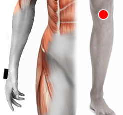

Enuresis
Par
muñeca - rodilla
frontopolo - frontopolo

Generalidades:
La enuresis es la micción involuntaria, es decir orinarse. En los niños es frecuente la enuresis nocturna y hasta cierto punto puede ser normal que pueda ocurrir eventualmente aún en edades hasta los 10-12 años. Antes de los 4 a 6 años es completamente normal ya que no se ha alcanzado el control vesical. Existen muchas medidas para evitar que esto ocurra ya sea evitar ingerir líquidos unas horas antes de ir a la cama, levantar al niño una o dos veces para ir al baño, etc.
Causas:
Las causas pueden ser tanto fisiológicas como psicológicas. Dentro de las primeras podemos mencionar los niveles de la hormona antidiurética, trastornos del sueño, infecciones en vías urinarias, conformación de la vejiga, entre otros. Cuando el trastorno aparece después de que ya se ha logrado el control vesical durante cierto tiempo se le llama enuresis secundaria y es cuando se debe sospechar más de una causa fisiológica y trastono psicológico como pudiera ser el sentimiento de miedo. Es importante no devaluar al niño por esta condición, ni presionarlo; por otra parte habrá que brindarle respaldo.